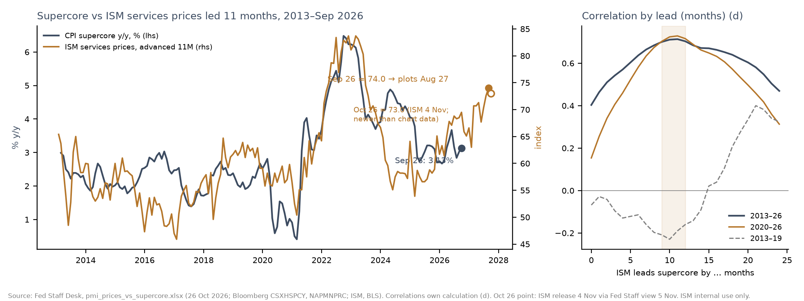
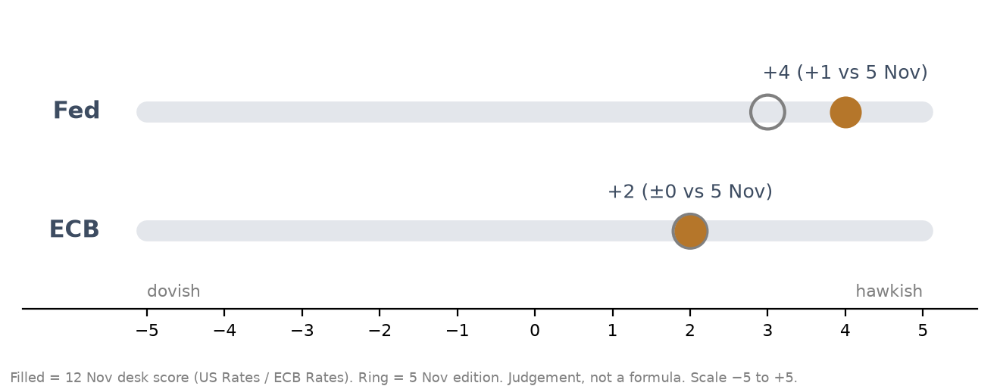
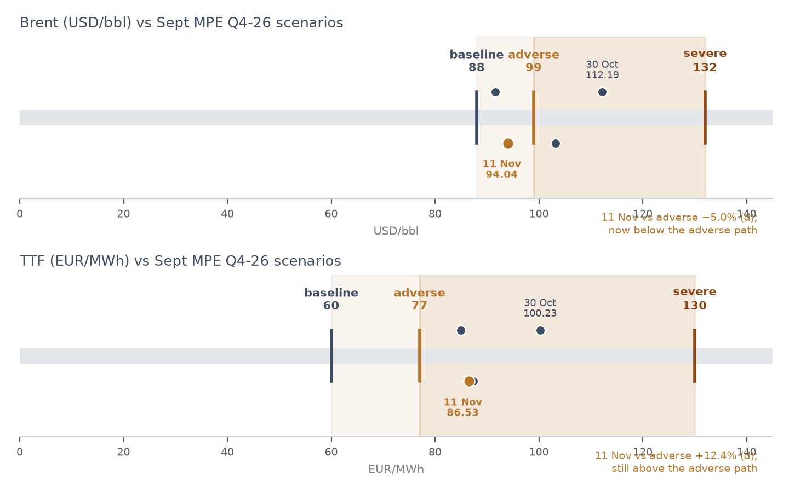
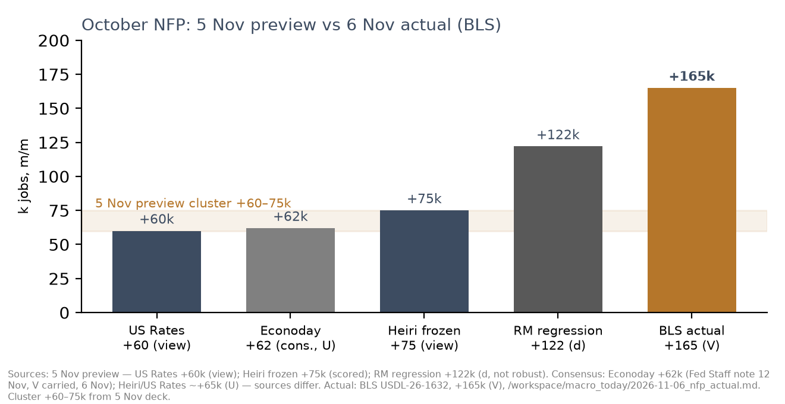
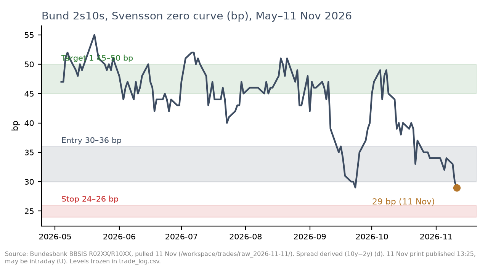
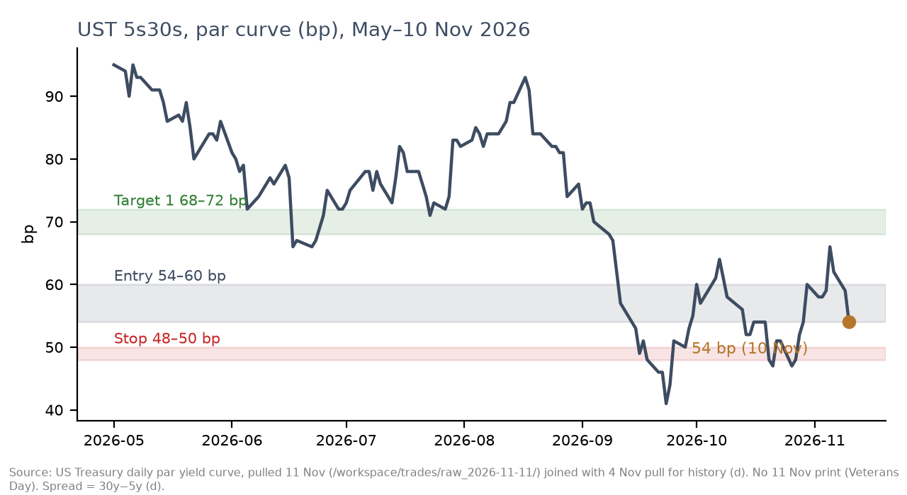
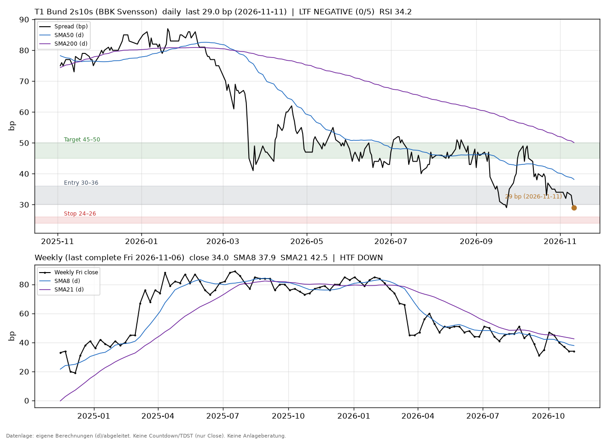
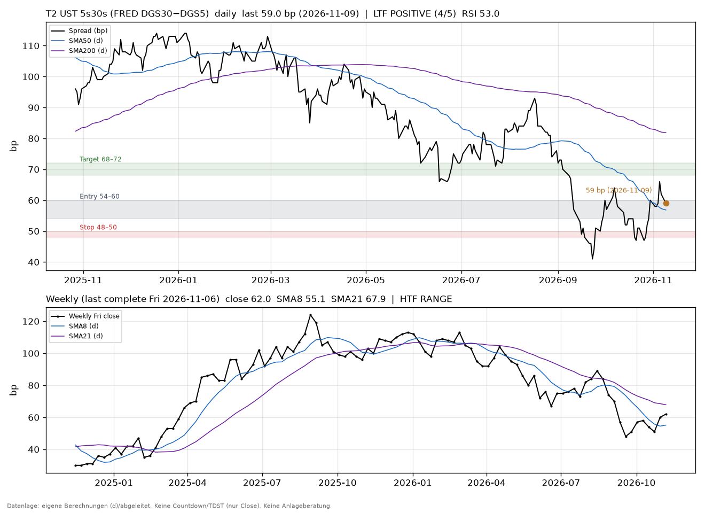

Auditor hints and page scope
- Notes on slides 1 and 13 say ‘pending’.
- Slide 1 says 5–11 Nov while slide 2 says 5–12 Nov.
- The 30y auction and EA GDP t+45 are missing from the calendar.
ISM and GS/BofA research appear with Thomas’s approval for this team-only page.
Investment Meeting 12 Nov 2026
USD & EUR Fixed Income
Firm October payrolls (+165k) and CPI (0.4/0.3) lift the Fed barometer to +4; the ECB stays at +2. No new trade idea holds up.
A Review (incl. nowcasts) · B Current environment · C Outlook · D Trades
Review 5–11 Nov 2026 · Outlook 12–26 Nov 2026 · Data as of 10–12 Nov 2026 (cut-offs vary) · Built 12 Nov, ~07:54 Zurich
Internal use only – not investment advice · Ideas only, no orders · GBP/JPY on the calendar only
DATA REVIEW · 5–12 NOV 2026 · US AND EURO AREA · RM MORNING PACKAGE 12 NOV
October NFP printed +165k, well above the 5 Nov preview cluster of +60–75k; CPI 0.4/0.3 was also firmer than secondary consensus
Added this morning — Research Manager, 12 Nov ~08:10 (V unless noted)
Policy spots (overnight fixings, not meeting-implied prices): SOFR 3.88 and EFFR 3.88 (effective 9 Nov, V; Fed target 3.75–4.00). €STR 2.439 (reference 11 Nov, published 12 Nov 08:00, V). SOFR for 10 Nov is still n/a (Veterans Day; expected 12 Nov 14:00 Zurich). Meeting-implied SOFR/FF futures and €STR OIS are not primary-available (CME 403, Eurex 404); nothing was substituted — including not the stale 28 Oct CNBC “Dec ~85%” or the FST3 proxy.
DE IP Sep +0.7% m/m SA (Aug revised to +1.0% from +2.0%; Q3 vs Q2 −0.4%; Destatis PM 389, 6 Nov, V). Sentix Nov EA +2.4 (−0.3) (V). ZEW Oct +28.1 (−6.6) (V); next print 17 Nov 11:05. UK GDP Q3 +0.7% q/q, +1.9% y/y (ONS 12 Nov, V) — non-core scope, one line only. Claims for 7 Nov, Oil Bulletin and EIA Brent after 3 Nov: values follow in an RM addendum this afternoon. Shaded: key new prints. Consensus is restricted in the public export. NFP +165k and U-3 4.1% agree across BLS, US Rates and Fed Staff. UMich prelim. Nov 51.0 (V).
| Region | Release (period, date) | Actual | Prior / 5 Nov preview | Consensus | Read |
|---|---|---|---|---|---|
| US | NFP Oct (6 Nov, BLS, V) | +165k; U-3 4.1%; AHE +0.4% m/m; rev. +84k | Sep +60k (rev.); U-3 4.2%. Preview cluster +60–75k | Restricted - internal only | Actual well above every 5 Nov desk view (d) |
| US | CPI Oct (10 Nov, BLS, V) | +0.4% / core +0.3% (unrounded 0.350 / 0.296, d). No official y/y | Sep +0.6% / +0.3% | Restricted - internal only | Restricted - internal only |
| US | Productivity Q3 (5 Nov, BLS, V) | +3.6% SAAR; ULC −0.7% SAAR / +2.4% y/y | Q2 prod. +2.1% (rev.); ULC +1.9% | n/a | Supply offset to wages (Fed Staff view) |
| US | NFIB SBET Oct (10 Nov, V) | Optimism 97.8; uncertainty 84 | 97.9 / 90 | n/a | Uncertainty −6 pts (d) |
| US | Initial claims, week ended 7 Nov | n/a — due today 14:30; RM addendum this afternoon | 189k, week ended 31 Oct (V) | n/a | Flagged missing by Fed Staff Desk; value not yet in |
| EA | HICP headline / core flash Oct (4 Nov, V) | 4.0% / 2.5% | 3.8% / 2.5% | Restricted - internal only | Agrees with 5 Nov deck; final 18 Nov |
| DE | HICP final Oct (11 Nov, Destatis) | 2.8% y/y, −0.1% m/m (= flash); CPI core 2.1 | Flash 2.8; core was 2.4 (Jul–Sep) | n/a (0.0 vs flash) | U: search-index copy, live page timed out |
| Mkt | UST 10 Nov (V) / Bund 11 Nov (BBK) | UST 2y 4.73, 10y 4.98; 5s30s 54bp (d). Bund 2y 3.08, 10y 3.37; 2s10s 29bp (d) | 5 Nov: 5s30s 66bp; Bund 2s10s 32bp (d) | — | Bear flattening after CPI. Bund may be intraday (U). No 11 Nov UST (Veterans Day) |
Internal use only – not investment advice
US INFLATION RISK · FED STAFF DESK · UNCHANGED SINCE 5 NOV · ISM DATA © ISM
ISM services prices at 73–74 still flag upside risk to US core services inflation in 2027 – a risk, not a base case; no new ISM release
Unchanged (as of 4–5 Nov)
No new ISM release since 4 Nov. Chart and facts are carried from the 5 Nov edition.
Facts
ISM services prices 74.0 in Sep 2026 (highest since 2022), 73.0 in Oct (4 Nov). Supercore 3.13% y/y in Sep vs 2.25% avg 2013–19 (d). Official core: CPI 2.6% y/y Sep (BLS); PCE 3.1% Sep (BEA).
Derived (d) and desk view
Correlation with supercore 11M later 0.71 (2013–26); mechanical path of 4.3% around Jun 2027 is a risk, not the baseline (core PCE 3.2%/2.6%). Not re-audited.

Internal use only – not investment advice
Restricted - internal only
Restricted - internal only
@econvitals content is NUR INTERN / secondary; the UULC slide is excluded from the public export.
Internal use only – not investment advice
NOWCASTS · US AND EURO AREA · STATUS COLUMN · DATA AS OF 12 NOV 07:42 ZURICH
October US CPI nowcast (AMBER) was 0.35/0.33 against an actual 0.4/0.3; PCE and PPI are B1 audited by the Auditor (AMBER); EA HICP November is RED at 4.1% y/y
Consistency, not resolved — different measures: Fed Staff core PCE baseline 3.2% (Q4/Q4, own est.) vs specialist PCE core y/y 3.35 (d) vs Cleveland Q4 core PCE 3.38% SAAR (V, 10 Nov). Bowman (10 Nov, V) said October core PCE y/y is “likely” 3.3%, consistent with the specialist 3.35 (d) — a one-decimal “likely” vs a two-decimal nowcast, not a conflict. EA HICP Oct flash 4.0% (V) vs Nov y/y nowcast 4.1 (d, RED) are different months. INTERNAL ONLY (restricted in public export): Restricted - internal only; CPI/PPI consensus; Restricted - internal only; Restricted - internal only; Restricted - internal only. Caveats: PCE and PPI B1 audited by the Auditor: AMBER (0.41/0.40 and 0.45/0.31 confirmed). EA RED; backtests only partly real-time; Oil Bulletin and Brent after 3 Nov missing (EA energy as of 2 Nov); DE finals from screenshots (U); seals are a local hash chain, not an external timestamp; nothing imputed. EA GDP Q3 flash 0.4% (V), ex-Ireland 0.21 (d); t+45 on 13 Nov. Nowcast GELB and FT-vs-EIA Brent: see caveats.
| Item | Value | Status | Auditor | Source / as-of |
|---|---|---|---|---|
| US GDPNow Q4 SAAR | 3.5% (FRED 3.4810) (V) | Vintage as of 9 Nov; next 17 Nov | Not checked | Atlanta GDPNow; Fed Staff 12 Nov |
| NY Fed Staff Nowcast Q4 | 2.94% (V) | Stale (as of 6 Nov); no later vintage | Not checked | NY Fed xlsx; Fed Staff 12 Nov |
| Fed Staff Q4 GDP / core PCE baseline | GDP 3.0%; core PCE 3.2% Q4/Q4, upside 3.3–3.4 (own est.) | Own est. (Fed Staff Desk), pending PPI | Not checked | Fed Staff note 12 Nov (Page of 6 Nov) |
| US CPI Oct (specialist) | Nowcast 0.35 / core 0.33 (d). Actual 0.4/0.3 (V); unrounded 0.3503/0.2963. Error −0.003 / +0.030 pp (d). Core inside 80% band | AMBER (GELB). Released 10 Nov. Sealed | Scored; status AMBER | Specialist pack 12 Nov 07:42; freeze 10 Nov 10:11 |
| US CPI Nov (specialist) | n/a — not robust (only 2 of 5 EIA Mondays; no Nov input pack) | AMBER. Earliest after EIA 17 Nov. No number issued | n/a | Specialist pack 12 Nov 07:42 |
| US PCE Oct (specialist) | Headline 0.41 (80% 0.32–0.49); core 0.40 (0.31–0.49); y/y 3.9 / 3.35 (d). Stage B1 | Sealed B1. Audited by Auditor: AMBER. B2 after PPI 13 Nov | B1 audited: AMBER | Seal 11 Nov 09:48; Auditor 12 Nov |
| US PPI Oct (specialist) | Final demand 0.45; core (FD x food & energy) 0.31 (d). 80% bands too narrow (73% hit rate) | Sealed B1. Audited by Auditor: AMBER. Release 13 Nov 14:30 Zurich | B1 audited: AMBER | Seal 11 Nov 09:44; Auditor 12 Nov |
| EA HICP Nov (specialist) | Headline −0.17% m/m NSA; core −0.32 (d). y/y 4.1 / 2.8 (d). Bands withheld | RED. Unsealed; real-time test not complete. Flash 1 Dec | Not audited (RED) | Specialist pack 12 Nov 07:42; run 6 Nov, re-checked 12 Nov |
| EA HICP Oct flash (ECB Staff) | 4.0% y/y (V); HICPX 2.5 (V). Restricted - internal only | Flash; final 18 Nov. Different month from the Nov y/y 4.1 nowcast — both shown | Not checked | Eurostat 4 Nov; ECB Staff 12 Nov. Agrees with 5 Nov deck |
| ECB Staff Q4 HICP / Q4 GDP | HICP ~3.8–3.9 (own est.); baseline still ~4.0; Sept MPE 3.6. GDP +0.2–0.3 (own est.) | Own est. (ECB Staff Desk), pending | Not checked | ECB Staff note 12 Nov |
| euroareanowcast tracker Q4 | Restricted - internal only | Restricted - internal only | Restricted - internal only | Restricted - internal only |
Internal use only – not investment advice
EXPERT VIEWS · USD AND EUR · WRITTEN 12 NOV (DESK NOTES THIS MORNING) · FED SPEECHES SINCE 30 OCT
Fed Staff Desk (12 Nov, view)
Hold at 3.75–4.00% with a tightening bias; a December hike is live, not automatic (view, not a fact).
Growth: GDPNow Q4 3.5% (9 Nov, V) and NY Fed 2.94% (6 Nov, V) vs staff baseline 3.0%. Core PCE baseline 3.2% with upside risk 3.3–3.4 (own est.), pending PPI 13 Nov.
Labour is mixed: payrolls and U-3 4.1% coexist with U-6 at 7.9% and still-soft claims (189k, 31 Oct, V).
ECB Rates (12 Nov, view)
ECB +2, unchanged vs 5 Nov. Base case: +25bp in December (DFR 2.50% to 2.75%) with a dovish tilt / “one and done” risk. Next decision 16–17 Dec.
Hawkish level: HICP flash 4.0%, core 2.5%, wage tracker 2.7/2.8, CES 3.1/2.9 (V). Dovish offsets (DE core 2.1; staff Q4 HICP path lower, pending) were not enough to move the score.
Quotes are institutional (29 Oct GC statement), not individual speakers. No primary meeting OIS (Eurex 404; FST3 is a proxy, U, 6 Nov, not used as a substitute).
ECB Staff Desk (12 Nov, staff view)
Staff view, not Governing Council or ECB staff projections. GDP Q4 +0.2–0.3 (own est.). Q4 HICP ~3.8–3.9 (own est., pending; baseline still ~4.0) vs Sept MPE 3.6.
Oct HICP flash 4.0 (V), HICPX 2.5 (V). DE final confirmed 2.8; DE CPI core eased to 2.1. No second-round signal so far. Policy read unchanged vs 4 Nov. Market pricing: n/a (Eurex 404); nothing substituted.
Energy prices Yahoo (U). Pass-through rule unverified. Baseline tables change only on Thomas’s go-ahead.
Fed speeches since 30 Oct · Research Manager, 12 Nov ~08:10 · primary texts (V) · closes the US Rates gap
Waller, 10 Nov (V, before the CPI). Leaning toward +25bp in December. If core CPI is “around 0.3 percent or even higher”, “a 50 basis point hike … should be considered” — hiking only 25bp “would put our credibility at risk.” The speech was not updated after the print.
Logan, 30 Oct and 10 Nov (V). “At least two more 25-basis-point rate increases.” On 10 Nov: the pace “could depend” on the near term; “it may be possible to move more rapidly this winter.” Then a pause; goal “modestly restrictive.”
Bowman, 10 Nov (V, after the CPI). Oct core PCE y/y “likely” 3.3% — consistent with the specialist PCE core y/y of 3.35 (d); a one-decimal “likely” vs a two-decimal nowcast, not a conflict. “Still work to do”; “not on a preset course”; no explicit December step.
Barkin, 9 Nov (V). Direction “straightforward”; “move policy with care.” Barr (today 16:00 Zurich) and Jefferson (14 Nov 01:00) texts are n/a. Bowman discussions, 6 and 9 Nov: no published text (404).
Internal use only – not investment advice
HAWK–DOVE BAROMETER · FED AND ECB · CHANGE VS 5 NOV · JUDGEMENT, NOT A FORMULA
Fed +4 (+1 vs 5 Nov)
US Rates, 12 Nov. Driven by NFP +165k (V) and CPI 0.4/0.3 Restricted - internal only. Logan (30 Oct, 2026 voter) guided for at least two more 25bp hikes — restated on 10 Nov (V, slide 6). December +25bp is their base case.
ECB +2 (±0 vs 5 Nov)
ECB Rates, 12 Nov, re-confirmed. Base case remains a December +25bp with a dovish tilt. To +3 if core/services re-accelerate; to +1 if energy relief cuts the Q4 path toward ~3.5% and signalling shifts.
Caveats
Judgement, not a formula. Fed speeches since 30 Oct are on slide 6 (RM, primary texts, V); that US Rates gap is closed. Meeting-implied SOFR/FF and €STR OIS remain n/a (CME 403, Eurex 404); nothing was substituted. CPI consensus is restricted in the public export. This patch is not re-audited.

Internal use only – not investment advice
EA ENERGY SCENARIOS · SEPT MPE LADDER VS SPOT · UPDATED TO 11 NOV
Where spots sit (11 Nov, U)
Brent USD 94.04 is 5.0% below the Sept MPE adverse path of 99 (d). TTF EUR 86.53 is 12.4% above adverse 77 (d). Gas is still the tighter side of the ladder.
Staff HICP path
Own Q4 HICP ~3.8–3.9 (pending) vs Sept MPE 3.6. The 4 Nov baseline is still ~4.0. 2026 HICP 3.1; 2027 ~2.7–2.8 (own est.). No baseline reset without Thomas’s go-ahead.
Scenario weights (4 Nov, not re-confirmed)
Energy near adverse 55%, re-escalation 20%, settlement 25% (ECB Staff, own est.). Not a new judgement this week.
Caveats
Spots are Yahoo (U, delayed). FT-vs-EIA Brent conflict unresolved. Specialist Oil Bulletin as of 2 Nov; EIA Brent 107.03 on 3 Nov (V) is a different source and date. Not Auditor-checked.

Internal use only – not investment advice
BROKER RESEARCH · GS AS OF 5 NOV (NO NEW PIECE; MARQUEE LOGIN NEEDED) · FIVE DB NOTES AFTER 5 NOV
No new Goldman Sachs piece after 5 Nov (Marquee login needed — a gap, not “GS is silent”); five Deutsche Bank notes after 5 Nov are INTERNAL ONLY
BROKER CONTENT – exclusive use of the licensed recipient. GS: included in the public page per Thomas 12 Nov 07:05 (licence still says internal use; audience limited to his team). All DB: INTERNAL ONLY, DO NOT REDISTRIBUTE — restricted in the public export.
GS after 5 Nov: none on the box or in Gmail. Marquee requires a browser login — that is a gap, not a finding that GS published nothing. The 3 Nov and 4 Nov GS pieces stay as of 5 Nov. All DB content is INTERNAL ONLY, DO NOT REDISTRIBUTE, broker opinion (U). The 9 Nov CPI preview is superseded by the BLS print. Capital Markets Intelligence and other houses: none found after 5 Nov. PDFs read as text only; exhibits not evaluated. This patch is not re-audited.
| House / piece (as of) | What they said (broker opinion, not verified) | Flag |
|---|---|---|
| GS European Daily, 3 Nov (Pierdomenico, Vashkinskaya) — as of 5 Nov; no newer GS | “More Inflation and Weaker Growth into the Winter”: Brent end-26 $105 (prev $90); TTF end-26 €90 (prev 70). 2027 headline avg 3.3% (prev 2.7%), peak 4.1% Q1-27. One more ECB hike in December kept; low hurdle for an extra March hike. | GS — public page allowed (Thomas). As of 5 Nov |
| GS US Economics, 4 Nov (Hatzius, Mericle, Phillips et al.) — as of 5 Nov; no newer GS | “Democrats Win a House and Senate Majority…”: Senate up to 56 seats possible, House ~255 (GS estimate). First legislative test 11 Dec; new majorities from 3 Jan 2027. Possible data-centre moratoria (TX, GA, MI), GS expects short-lived. | GS — public page allowed (Thomas). As of 5 Nov |
| Restricted - internal only | Restricted - internal only | Restricted - internal only |
| Restricted - internal only | Restricted - internal only | Restricted - internal only |
| Restricted - internal only | Restricted - internal only | Restricted - internal only |
| Restricted - internal only | Restricted - internal only | Restricted - internal only |
| Restricted - internal only | Restricted - internal only | Restricted - internal only |
| Restricted - internal only | Restricted - internal only | Restricted - internal only |
Internal use only – not investment advice
Restricted - internal only
Restricted - internal only
@econvitals content is NUR INTERN / secondary; the 10 Nov CPI thread is excluded from the public export. Consensus figures and Cleveland PCE m/m in that thread are also restricted.
Internal use only – not investment advice
FORWARD-LOOKING CALENDAR · USD/EUR FIRST, GBP/JPY KEPT · 12–26 NOV 2026 · RESEARCH MANAGER 12 NOV ~08:10
Next two weeks: US PPI 13 Nov, ZEW / retail sales / IP 17 Nov, EA HICP final and FOMC minutes 18 Nov, PCE and GDP Q3 second estimate 25 Nov
Window 12–26 Nov (two weeks, as requested). USD/EUR first, GBP/JPY kept. Shaded: PPI 13 Nov; ZEW / US retail sales / G.17 IP 17 Nov; EA HICP final and FOMC minutes 18 Nov; PCE and GDP Q3 second estimate 25 Nov. U-dated, marked U: Flash PMI 23 Nov, ifo 24 Nov, ECB Accounts 26 Nov (and the Japan CPI clock). Source is the 12 Nov RM calendar — it replaces the 5 Nov file; the stale flag is removed. Treasury auctions n/a (HTTP 505). Oil Bulletin and EIA Brent, and the claims value, follow in an RM addendum this afternoon. Beyond the window (not a complete list): Tokyo CPI and claims shift 27 Nov; Ueda Nagoya 30 Nov; HICP flash Nov 1 Dec; FOMC 8–9 Dec; ECB 16–17 Dec; BoE 17 Dec; BoJ 17–18 Dec. This patch is not re-audited.
| Date (Zurich) | Event | Ccy | Status (source) |
|---|---|---|---|
| Thu 12 Nov 08:00 | UK GDP Q3 first estimate + monthly Sep | GBP | Printed: +0.7% q/q, +1.9% y/y; Sep +0.2% m/m (ONS, V). Non-core; see slide 2 |
| Thu 12 Nov 14:30 | US claims, week ended 7 Nov | USD | Confirmed (NY Fed, V). Value n/a — RM addendum this afternoon |
| Thu 12 Nov 16:00 | Barr, “AI and Inequality”; NAR existing home sales | USD | Barr text n/a at the 08:10 cut-off (calendar V) |
| Fri 13 Nov 08:45 / 14:30 | FR IPC final Oct; US PPI Oct (BLS first print) | EUR / USD | Both confirmed (V). PPI: PCE pipeline; staff core-PCE decision |
| Mon 16 Nov 00:50 | Japan GDP Q3, first preliminary | JPY | Confirmed (ESRI, V) |
| Tue 17 Nov 08:00; 11:05; 14:30; 15:15 | UK Labour; ZEW Nov; US Retail Sales + import prices; G.17 IP | GBP / EUR / USD | All confirmed (V). ZEW last print Oct +28.1; this is the Nov release |
| Wed 18 Nov 08:00; 12:00; 20:00 | UK CPI Oct; EA HICP final Oct; FOMC Minutes (27–28 Oct) | GBP / EUR / USD | Confirmed (V). ECB HICP SA 12:00 (V); Eurostat live time U (eventsJson 400) |
| Fri 20 Nov ≈00:30 / 08:00 / 16:00 | Japan CPI national Oct; UK Retail Sales; UMich final | JPY / GBP / USD | Japan date V, time U. UK Retail and UMich confirmed (V) |
| Mon 23 Nov (~09:15–15:45) | S&P Flash PMI Nov (FR / DE / EA / UK / US) | EUR / GBP / USD | U — not live-confirmed (S&P calendar 403) |
| Tue 24 Nov ~10:30 / 16:00 | ifo climate Nov; Conference Board confidence | EUR / USD | ifo: U, not live-confirmed. Conference Board 16:00: confirmed (V) |
| Wed 25 Nov 14:30 / 20:00 | US PCE Oct + GDP Q3 second estimate; Beige Book; ECB non-MP meeting | USD / EUR | Confirmed (BEA 12 Nov, V). Specialist PCE is B1 audited by Auditor: AMBER |
| Thu 26 Nov — / time U | Thanksgiving (US closed); ECB General Council; ECB Accounts (28–29 Oct) | USD / EUR | Thanksgiving V. ECB Accounts: date and time U (page not reachable) |
Internal use only – not investment advice
OUTLOOK 12–26 NOV · GEOPOLITICS AS OF 12 NOV · WEATHER-TO-GAS (12 NOV 07:22)
Rate-relevant points · as of 12 Nov
1. US midterms. Democrats win both chambers (U, seat counts still open). The CR runs to 11 Dec (V, P.L. 119-103). Split government and shutdown risk support the US term premium (view).
2. Hormuz. De-escalating rhetoric (U); the strait is still closed (U). The energy risk premium is down, with reversal risk for breakevens (view).
3. Energy. Brent 94.04 (Yahoo, 11 Nov, U) vs EIA 107.03 (3 Nov, V) — conflict unresolved. TTF 86.53 (U). EU storage 71.6% (U).
4. Ukraine. No ceasefire (U / ISW V).
5. EU summit 26–27 Nov. A EUR 45bn Ukraine-financing option (U). The channel is EU bond supply, OATs and the periphery.
6. France. The 2027 budget was rejected 0–458 at first reading (V, 4 Nov, Assemblée: 0 for / 458 against / 2 abstentions). OAT credibility risk (view).
7. US–China. The tariff truce is extended by two months (V); a January cliff remains.
Scenario judgement (Senior Political Strategist), not forecast or advice. To end-April 2027; previous (29 Oct) values in brackets. Sum 100% per theatre.
Weather-to-gas, 12 Nov 07:22 (d) — not a price forecast
Near term: NW Europe D+1–7 −0.7 K (HDD +8%). Winter (Dec–Feb): NW Europe +1.3 K, HDD −11%, medium confidence, TTF-bearish bias. US Midwest week of 16 Nov: +2.7 K, HDD −19%, high confidence, Henry Hub-bearish. A cold flag for the US South Central week of 23 Nov is medium confidence; a GFS cross-check disagrees.
| Theatre | Scenario | Now (prev.) |
|---|---|---|
| Hormuz | Stalemate | 45 (40) |
| Hormuz | Sequenced deal | 35 (30) |
| Hormuz | Limited strikes | 12 (20) |
| Hormuz | Regional energy war | 8 (10) |
| Ukraine | Attrition | 55 (50) |
| Ukraine | Partial ceasefire | 20 (25) |
| Ukraine | Support break | 20 (20) |
| Ukraine | Ceasefire | 5 (5) |
Internal use only – not investment advice
NFP ACTUAL VS 5 NOV PREVIEW · OCT 2026 · RELEASED FRI 6 NOV 14:30 ZURICH
October NFP printed +165k (V): every 5 Nov desk view in the +60–75k cluster was too low, and the +122k regression was not robust either
Factual comparison only: the 5 Nov preview cluster was +60–75k; the actual +165k (V) was well above it. Consensus sources differ (Restricted - internal only vs Restricted - internal only) and are restricted in the public export. U-3 4.1% and +165k agree across BLS, US Rates and Fed Staff — no conflict. Heiri 12:45 update (+50k) and ADP +86k / Revelio +26k were not in the 5 Nov deck cluster; they are in the nachlauf file and were also below the actual. Not Auditor-checked.
| Source (5 Nov preview) | NFP / note | vs actual +165k (d) | Status |
|---|---|---|---|
| US Rates (view) | +60k (band +10–110k); U-3 4.2% | −105k | View (d) |
| Restricted - internal only | Restricted - internal only | Restricted - internal only | U / V carried; restricted in public |
| Heiri / V3 Labour (frozen, scored) | +75k; U-3 4.2%; AHE +0.3% (U) | −90k | View (U). Falsifier HIGH hit |
| Restricted - internal only | Restricted - internal only | Restricted - internal only | Restricted - internal only |
| RM regression (ADP +86k) | +122k; 2024–26 subsample +71k (d) | −43k / −94k | (d), not robust (R²≈0 since 2024) |
| Fed Staff Desk | No point estimate; “near-cons → hold with bias” | n/a | View. Hold-with-bias still the stance |
| BLS actual (6 Nov, V) | +165k; private +159k; U-3 4.1%; AHE +0.4%; rev. +84k | — | V. Agrees with US Rates and Fed Staff |

Internal use only – not investment advice
TRADE STATUS · T1 AND T2 · NO NEW IDEA · FEWER THAN TWO PROPOSALS HOLD UP
Fewer than two proposals hold up: T2 is dropped; T1 stays at Low with no entry at 29bp
Technicals (Technical Analyst, d) · 12 Nov 08:01–08:03 Zurich · DeMark setup only · charts in export/charts/ (t1_bund_2s10s.png, t2_ust_5s30s.png)
T1. Weekly trend DOWN (34 < SMA8 37.9 < SMA21 42.5). Daily momentum NEGATIVE 0/5, RSI 34.2. DeMark spread-down setup 9 on 10 Nov (bounce warning, not a reversal). Supports “Low, no entry” (view).
T2. FRED 59bp on 9 Nov (10 Nov missing in FRED; deck uses 54bp Treasury par 10 Nov). Weekly RANGE. Daily momentum POSITIVE 4/5 as of 9 Nov (FLAT 3/5 using the 54bp par value). DeMark spread-up setup 9 on 6 Nov (steepening exhaustion). UST 2s10s flattening. The drop is technically understandable but not forced (view).
Auditor marks, 12 Nov (source: Auditor; trade_log.csv marked 12 Nov; levels frozen, not edited by IP-Deck). T1 29bp (d), BBK Svensson 2y/10y 3.08/3.37, as of 11 Nov 13:25 Zurich, no 12 Nov print, stop/target not hit, vs hypothetical fill 32 = −3bp. T2 54bp (d), Treasury par 5y/30y 4.81/5.35 as of 10 Nov (V), 11–12 Nov n/a, stop/target not hit, vs fill 59 = −5bp. Both still open. No new idea held up (Andy 4/5). Fewer than two proposals hold up — stated, not padded. Ideas only, no orders.
| T1 Bund 2s10s steepener | T2 UST 5s30s steepener | |
|---|---|---|
| Last level (d) | 29bp (BBK Svensson, 11 Nov; may be intraday, U) | 54bp (Treasury par, 10 Nov; no 11 Nov print) |
| Logged entry / T1 / stop (frozen) | 30–36 / 45–50 / 24–26 (close < 26) | 54–60 / 68–72 / 48–50 (close < 48) |
| Where it sits | Below the entry band; 3bp above the logged stop; 1y low (1st pct, d) | At the bottom of the entry band; 6bp above the logged trigger |
| Stop, existing convention (binding) | Close < 26 (top of the 24–26 band) | Close < 48 (bottom of the 48–50 band) |
| Stop, unified rule (proposed, pending Thomas OK, not Auditor-checked) | ≈22 from a hypothetical fill of 32 (d) | ≈47 from a hypothetical fill of 59 (d) |
| Strategist, 11 Nov | Keep as an idea, cut to Low. No entry at 29bp. Re-assess only on a close back inside 30–36. | Drop (do not enter). Losing scenario — hawkish bear flattening — is under way. No level edge. |
| Andy Constan Bot | 4/5. Would drop on a close < 26bp rather than re-test. | 5/5 to drop. Gave 2/5 at issue. No edge left. |




Internal use only – not investment advice
DATA AND SOURCES – CAVEATS
⚠ Data and sources – caveats
- Audit: the Auditor checked the 07:54 edition (15 slides, v1) on 12 Nov ~08:05 Europe/Zurich: 57 OK, 2 hints, 0 number DIFFs (the internal audit file). This geo / Technical Analyst / RM / status patch has not been re-audited. trade_log.csv levels remain frozen (not edited by IP-Deck).
- Auditor marks, 12 Nov (source: Auditor; trade_log.csv marked 12 Nov). T1 29bp (d), BBK Svensson 2y/10y 3.08/3.37, as of 11 Nov 13:25 Zurich, no 12 Nov print, stop/target not hit, vs hypothetical fill 32 = −3bp. T2 54bp (d), Treasury par 5y/30y 4.81/5.35 as of 10 Nov (V), 11–12 Nov n/a, stop/target not hit, vs fill 59 = −5bp. Both still open. Svensson is a model curve, not a benchmark Bund; the UST mark is the last close on 10 Nov.
- Nowcast GELB / AMBER: the in-house US CPI Oct nowcast 0.35/0.33 (d) is a scored historical cross-check, not a trade trigger. US CPI Nov is not issued (not robust). EA HICP Nov is RED (real-time test not complete, unsealed, bands withheld). PCE and PPI Oct seals are B1 audited by the Auditor: AMBER (values 0.41/0.40 and 0.45/0.31 confirmed). Backtests are only partly real-time. Seals are a local hash chain, not an external timestamp. Nothing was imputed.
- FT-vs-EIA Brent conflict (unresolved): the energy-slide spots are Yahoo (U, 10–11 Nov, 91.63 then 94.04). The specialist pack’s last official EIA Brent is 107.03 on 3 Nov (V). These are different sources and dates; not resolved. No primary ICE settlements have been pulled since 29 Oct. Oil Bulletin and EIA Brent after 3 Nov are missing; EA energy in the specialist model is as of 2 Nov.
- Geo, as of 12 Nov (Senior Political Strategist; no longer stale): mostly secondary sources (U). Midterm seat counts are incomplete (U). Yields, the term premium and the OAT–Bund spread were not refreshed in that note. Scenario probabilities are the strategist’s judgement, not a forecast or advice.
- Technical Analyst (12 Nov 08:01–08:03, all (d), DeMark setup only): T2 at FRED 59bp on 9 Nov (4.67/5.26) vs Treasury par 54bp on 10 Nov (4.81/5.35) is a source difference, not a number conflict. The deck’s T2 level remains the Treasury par 54bp (V, 10 Nov). FRED has no 10 Nov print. Charts: export/charts/t1_bund_2s10s.png and t2_ust_5s30s.png.
- Auditor caveats, in brief (12 Nov): Svensson is a model curve; the UST mark is the last close on 10 Nov; BLS pages returned 403 so FRED was used; DE HICP, the EA flash, UMich, Cleveland 3.38, EIA, Yahoo spots, broker, geo and policy pricing were not re-verified at the primary source.
- Consistency, flagged not resolved: (a) Fed Staff core PCE baseline 3.2% is a Q4/Q4 own estimate; specialist PCE core y/y is 3.35 (d); Cleveland Q4 core PCE is 3.38% SAAR (V, 10 Nov) — three different measures. Bowman (10 Nov, V) said Oct core PCE y/y is “likely” 3.3%, consistent with the specialist 3.35 (d); not a conflict. (b) ECB Staff EA HICP Oct flash 4.0% (V) agrees with the 5 Nov deck; the specialist Nov y/y nowcast is 4.1 (d, RED) — different months. (c) NFP consensus sources differ (U; figures restricted). (d) CPI consensus sources differ (U; figures restricted). (e) Post-CPI market moves: @econvitals (figures restricted) vs a 24-minute CNBC window of +5.3/+4.5 bp, both U. (f) UMich consensus conflicts across secondaries (U; figures restricted). (g) @econvitals vs Cleveland pre-release m/m (U, internal; figures restricted). NFP +165k and U-3 4.1% AGREE across BLS, US Rates and Fed Staff. EA HICP Oct 4.0%/2.5% AGREES with the 5 Nov deck.
- Missing: claims for the week ended 7 Nov (due 12 Nov 14:30; RM addendum this afternoon); Oil Bulletin and EIA Brent after 3 Nov (RM addendum this afternoon); meeting-implied SOFR/FF futures and €STR OIS (CME 403, Eurex 404 — spots are on slide 2; nothing was substituted); GS after 5 Nov (Marquee login needed); Barr (12 Nov 16:00) and Jefferson (14 Nov 01:00) texts n/a; Cleveland vintages after 10 Nov; NY Fed Staff Nowcast after 6 Nov; US CPI Nov nowcast still n/a (after EIA 17 Nov). Now arrived: Senior Political Strategist (12 Nov); Technical Analyst (12 Nov); RM morning package (calendar, DE IP, Sentix, ZEW, Fed speeches, spot SOFR/EFFR/€STR, five DB notes).
- Internal only — restricted in the public export (CSV public_or_internal, and standing rules): Deutsche Bank; Manheim; Zillow ZORI; Action Economics (not used this edition); consensus values (CPI, PPI, NFP, HICP, UMich); Cleveland pre-release m/m; euroareanowcast; @econvitals. GS/BofA broker research is included in the public export per Thomas 12 Nov 07:05 (relayed by Chief); licence terms still say internal use; page audience limited to his team. ISM data © ISM is shown on the IP-deck page per Thomas Kirchmair, 12 Nov 2026 (relayed by Chief; team-only link); not for other public pages.
- Secondary / stale / derived: the 28 Oct CNBC “Dec ~85%” (U, stale) and the FST3 €STR-futures proxy (6 Nov, U) were not used as substitutes for missing meeting-implied prices (RM, 12 Nov). Bund 11 Nov may be intraday (U); Svensson is a model curve, not a benchmark Bund; Yahoo/Investing.com energy (U, delayed); Destatis DE HICP from a search-index copy / screenshots (U); EA Staff 2026 HICP (d) uses a Jan–Sep sum not re-fetched; UULC and ISM slides unchanged (2 Nov / 4 Nov); Capital Markets Intelligence briefs not newer than 5 Nov; CFTC positioning 27 Oct, stale. (d) methods are in the source files. Calendar source is now the 12 Nov RM file (stale flag removed).
- Stops: the binding convention is the logged one (T1 close < 26 at the top of 24–26; T2 close < 48 at the bottom of 48–50). The unified rule (close ≤ fill − 2× weekly vol, then 1× trail after Target 1) is proposed, pending Thomas’s OK, and not Auditor-checked. Fills are hypothetical (U). Views are opinions of US Rates, Fed Staff Desk, ECB Rates, ECB Staff Desk, The Rates Strategist, Andy Constan Bot, the Senior Political Strategist and the Technical Analyst. Trades are ideas, not orders. Scope: USD and EUR; GBP/JPY on the calendar only. Committee not polled. No emails were sent.
Internal use only – not investment advice